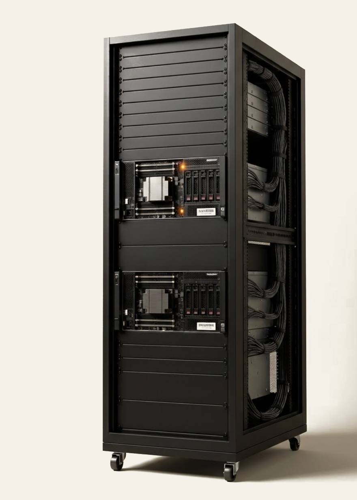

Open WebUI interface
Familiar chat UI. Teams are productive on day one with no retraining.
AI infrastructure for organizations that can't send their data to a third-party model. Runs inside your perimeter, on hardware you own, under your access policies.

On-premises AI gives you what cloud LLMs can't: data that never crosses your perimeter, usage that doesn't meter, and a deployment posture you fully own.
Inference runs on your hardware. No logs, no telemetry, no training data leakage to a vendor.
Fixed hardware cost, no per-query billing. Usage doesn't meter as adoption grows.
Open-weight models sized and quantized for your GPUs. Latency tuned to interactive use.
Runs fully offline, or with controlled egress. Your perimeter, your rules.
Vector and keyword retrieval (RAG) over millions of documents. Answers cite their sources.
Signed model bundles applied offline during your change windows. No forced upgrades.
Every deployment ships with the full stack your auditors and operators expect. No add-on tiers, no separate licensing.
Familiar chat UI. Teams are productive on day one with no retraining.
Continuous batching and paged attention for high throughput on your GPUs.
Serve multiple models in parallel. Route by task, document set, or user policy.
Conversations persist per user, searchable and exportable for handoff or review.
LUKS / AES-256 at rest. Encrypted snapshots and backups by default.
Every prompt, response, and admin action recorded for compliance review.
Permissions by user, group, and document set. Reviewable from a single console.
TOTP and FIDO2 supported. Enforced per role or per document sensitivity.
Logging, access review, and change-management controls aligned to SOC 2 and ISO 27001.
Bind to existing identity infrastructure. Users keep their credentials.
SAML 2.0 and OIDC. One login across the AI portal and your other internal systems.
Ingest from SMB, S3-compatible, SharePoint, and Confluence sources.
Scheduled snapshots of corpus, configuration, and audit logs. Restore tested per quarter.
Usage, latency, and GPU utilization on a single dashboard. Exportable to your SIEM.
When regulation, classification, or contractual obligation rules out cloud AI, on-premises is the only path to the same capability.
Can manufacturers use AI without sending plant data to the cloud?
Plant-floor OT networks are isolated from IT by design, and PLC code, schematics, and SOPs are core process IP. On-prem AI diagnoses faults, captures retiring engineers' knowledge, and bridges shifts — without anything leaving the air gap.
ITAR, CMMC, and classified programs — inside the enclave.
ITAR/EAR-controlled technical data and classified programs legally cannot touch a commercial cloud. Run inference inside accredited, air-gapped enclaves while teams query controlled drawings, requirements, and test data under CMMC.
PHI never leaves the hospital network.
HIPAA-protected records, imaging, and clinical notes carry real liability the moment they leave your premises. Keep PHI in-building while clinicians and researchers query the full corpus with a complete audit trail.
Can law firms use AI without breaching attorney-client privilege?
Attorney-client privilege, sealed matters, and M&A diligence demand that case files never transit a third-party model. On-prem AI reviews discovery, drafts, and precedent behind your own firewall.
MNPI, sealed deals, and examiner-ready logs.
Material non-public information, data-residency rules, and examiner scrutiny make cloud inference a compliance risk. Analyze filings, contracts, and risk data with sovereign control and full logging.
How can agencies use AI on CUI or classified workloads?
CUI and classified workloads require data sovereignty that public cloud cannot guarantee. Deploy on accredited, isolated networks with controls aligned to NIST 800-53 High and DoD SRG IL5–6.
Behind the NERC CIP boundary.
NERC CIP and SCADA isolation keep critical-infrastructure systems off the public internet. On-prem AI surfaces operational and compliance knowledge without breaching the security perimeter.
Can pharma use AI on proprietary R&D and GxP data?
Trade-secret formulations, GxP records, and clinical-trial data are the entire value of the enterprise. Keep proprietary research inside your walls while accelerating literature and protocol review.
Validate against your real corpus first, then deploy sovereign, air-gapped infrastructure scaled to your operation.
Customers see operational impact within the first month — without per-query economics fighting them.
Tell us about your environment and we'll scope a deployment that fits.